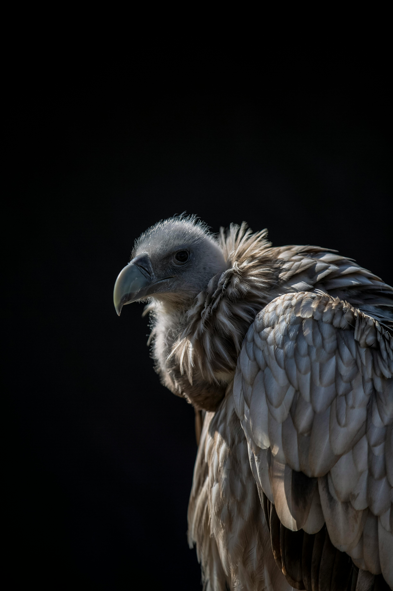
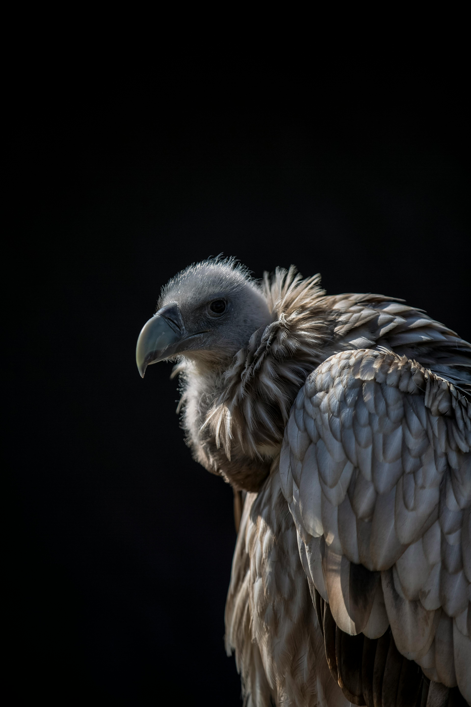

Multimedia
Știai că… colibri este singura pasăre care poate zbura înapoi? Această abilitate incredibilă se datorează modului unic în care își mișcă aripile – în formă de „8”. În plus, colibri bate din aripi de până la 80 de ori pe secundă
Știai că… colibri este singura pasăre care poate zbura înapoi? Această abilitate incredibilă se datorează modului unic în care își mișcă aripile – în formă de „8”. În plus, colibri bate din aripi de până la 80 de ori pe secundă
 
